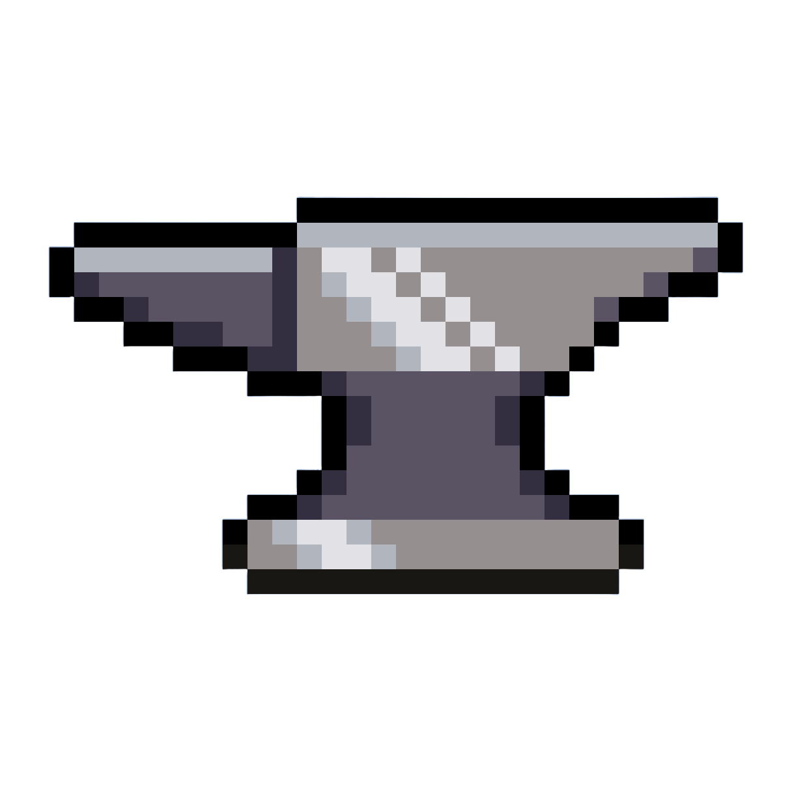

mods
Explorar →

Explore o incrível mundo de Minecraft e descubra tudo sobre blocos, mobs, biomas, mods e muito mais!
Encontre informações sobre Minecraft em um só lugar. Explore conteúdos sobre o jogo, descubra novidades, conheça diferentes biomas e confira curiosidades que talvez você ainda não conheça.
Este site foi desenvolvido com o objetivo de reunir informações sobre Minecraft de forma simples e organizada, facilitando a pesquisa e a descoberta de conteúdos sobre o jogo.